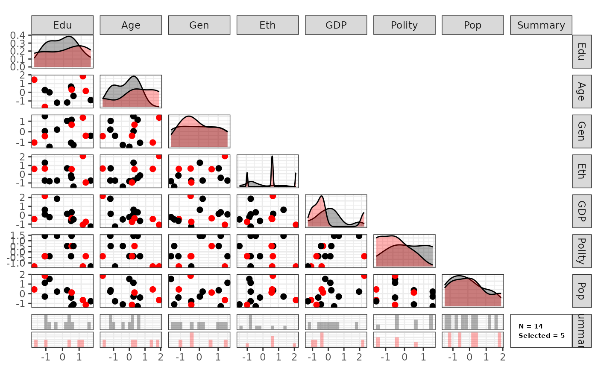

Get Started
intro.RmdSPS: Site Selection for External Validity
Step 3: Running SPS
out <- sps(X = X_use, N_s = 5, C = C_use, c0 = c0_use)Step 4: Check Site Selection
# selected countries
rownames(X_use)[out$ss == 1]## [1] "Bolivia" "Colombia" "Peru" "El Salvador"
## [5] "United States"
sps_plot(out)